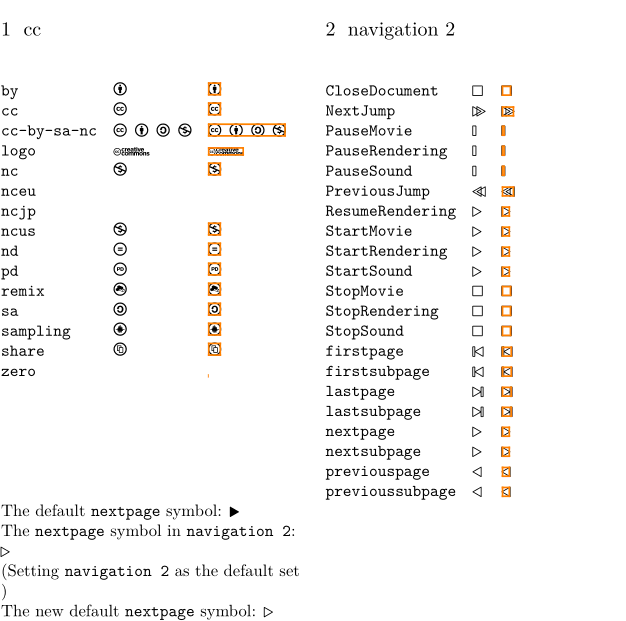

Syntax (autogenerated)
| \usesymbols[...] | |
| [...] | file |
Description
The following four symbol fonts are available with ConTeXt:
- Navigational symbols by Janusz M. Nowack — \usesymbols [jmn]
- Martin Vogel symbols — \usesymbols [mvs]
- ConTeXt navigation symbols — \usesymbols [nav]
- Roland Waldi's symbols — \usesymbols [was]
- Creative Commons — \usesymbols [cc] , e.g. \symbol [cc][cc-by-sa-nc]
Example
-
\usesymbols[nav,cc] \setupalign[flushleft] \startcolumns \section{cc} \showsymbolset[cc] \column \section{navigation 2} \showsymbolset[navigation 2] \stopcolumns The default \type{nextpage} symbol: \symbol[nextpage] The \type{nextpage} symbol in \type{navigation 2}: \symbol[navigation 2][nextpage] (Setting \type{navigation 2} as the default set \setupsymbolset[navigation 2]) The new default \type{nextpage} symbol: \symbol[navigation 2][nextpage]
- 
See also
- \showsymbolset to inspect a symbol set, and for a list of all symbol sets in the abovementioned symbol files
- \symbol to use a symbol from a symbol set.
Help from ConTeXt-Mailinglist/Forum
All issues with: